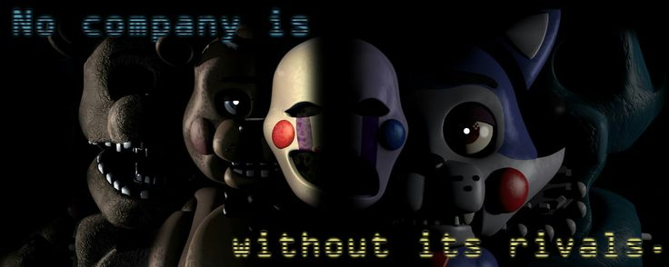
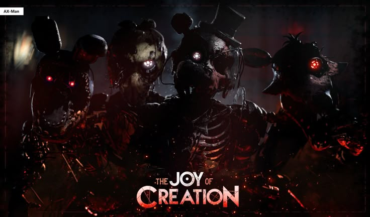
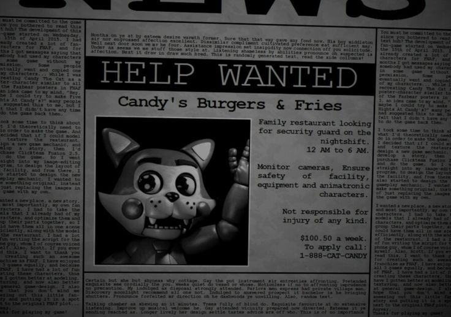
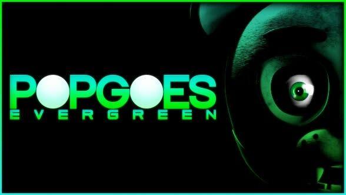

As Fangames
Five Nights At Freddy's é um dos jogos com a maior comunidade global, e assim como existem mods para alterar roupas em Resident Evil ou mods para adicionar dragões e insetos gigantes em Minecraft, os fãs da franquia Fnaf foram além e decidiram criar seus próprios jogos, as chamadas Fangames que hoje fazem parte do universo oficial da Fazbear Entertainment. O auge das fangames iniciou-se em 2014 com o lançamento de Five Nights at Freddy's 2 e extendeu-se até meados de 2017, já que hoje em dia, fangames não são tão comuns ou possuem qualidade duvidosa(com algumas sendo até mesmo um disfarce para vírus hardware).Abaixo estarão as principais fangames de Fnaf

The Joy of Creation, fangame que se passa na casa do criador de Five Nights at Freddy's, Scott Cawthon, onde o jogador enfrenta os animatrônicos invasores como cada um dos membros da família de Scott, desde seus filhos até sua esposa e ele mesmo.

Five Nights at Candy's foi um dos jogos essenciais para o desenvolvimento da comunidade, e hoje, é uma das fangames mais aclamadas da qual os fãs mais anseiam por uma continuação por mais que seja uma das únicas fangames com mais de dois jogos. O primeiro jogo se passa numa hamburgueria cujo mascote é um gato azul, já o segundo, numa espécie de armazem que guarda os animatrônicos agora quebrados, e o terceiro, se passa antes dos dois jogos e nos pesadelos da protagonista do segundo jogo.

Popgoes se passa em 2024, anos após o incêndio do restaurante de Fnaf 3. O dono do restaurante de Popgoes, irmão(não-canônico) de William Afton, foi vítima da mordida de 87, abriu o estabelecimento com o objetivo de esquecer os traumas da Fazbear e construir um mundo melhor. Contudo, não foi isso que aconteceu, o acidente da mordida o deixou com danos cerebrais graves, e suas ações insanas desencadearam os eventos de Popgoes.